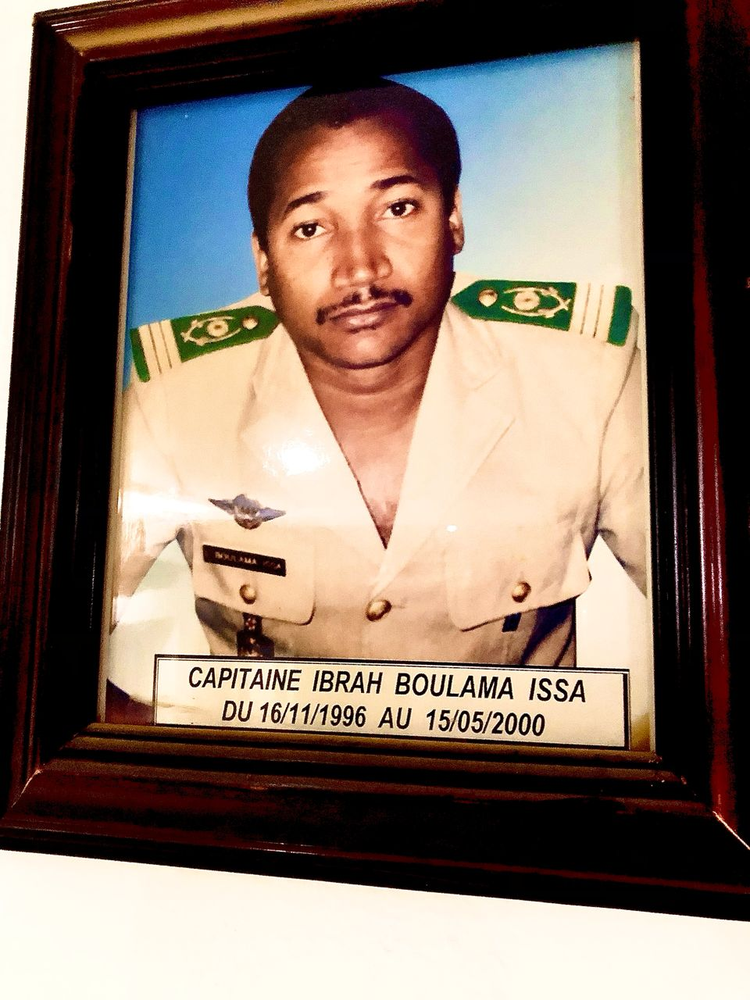
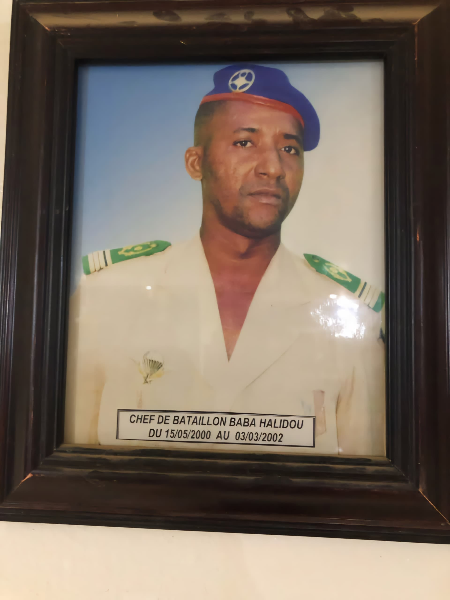
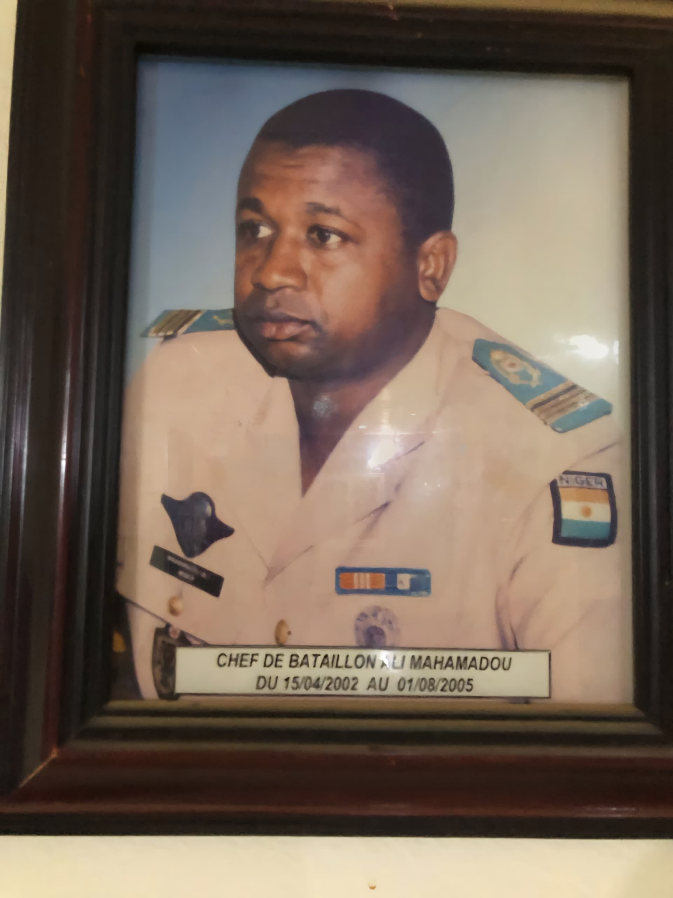
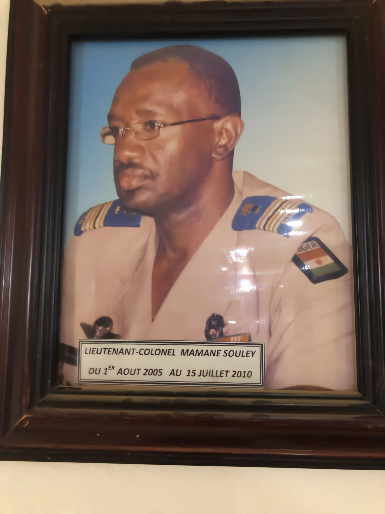
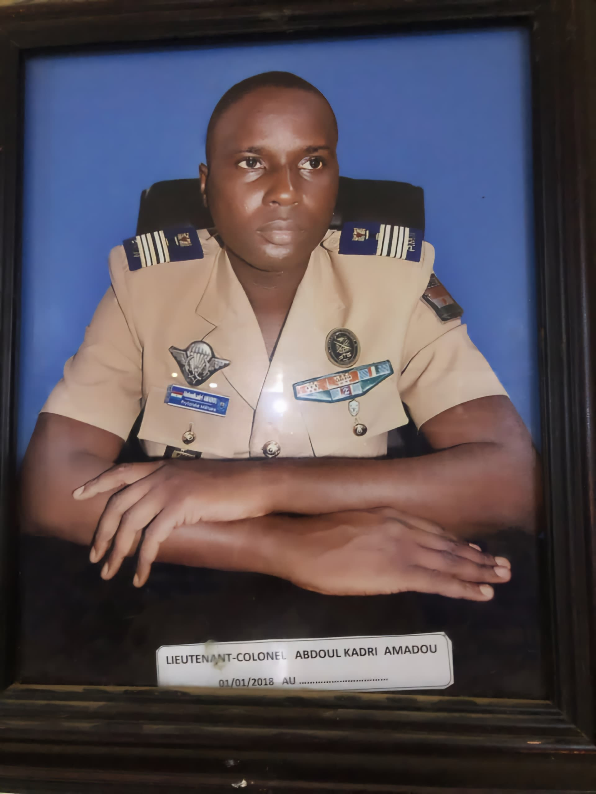
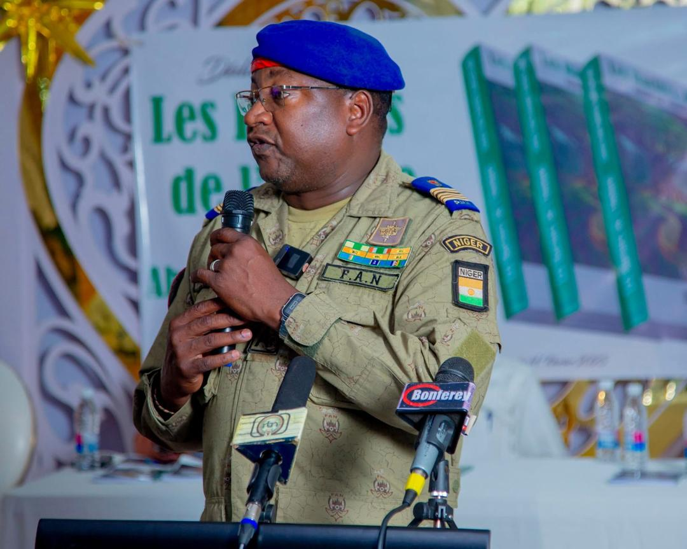
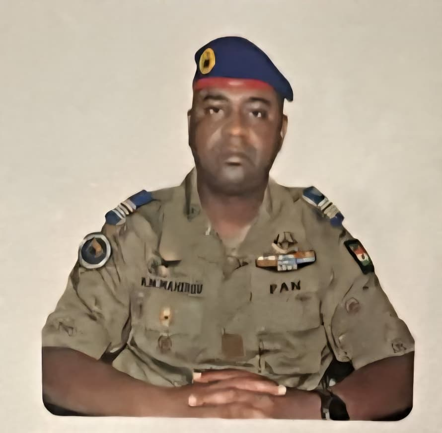

📜 Fondation du PMN
Le Prytanée Militaire de Niamey a été créé le 18 novembre 1996 par le Général Ibrahim Baré Maïnassara, à lors Président de la République du Niger. Son objectif était de former une élite académique et militaire, en inculquant aux élèves des valeurs de discipline, d’excellence et de patriotisme. Aujourd’hui, le PMN est reconnu comme une école d’élite, préparant les futurs cadres du pays.
📌 Les Chefs de Corps du PMN

1️⃣ Capitaine Ibrah Boulama Issa (16/11/1996 - 15/05/2000)
Premier responsable du PMN, il a posé les bases de l'organisation militaire et académique de l'école.

2️⃣ Chef de bataillon Baba Halidou (15/05/2000 - 03/03/2002)
Il a renforcé la discipline et structuré le programme d’instruction militaire.

3️⃣ Chef de bataillon Ali Mahamadou (15/04/2002 - 01/08/2005)
Son leadership a permis l’amélioration des infrastructures et du cadre de vie des élèves.

4️⃣ Lieutenant-colonel Mamane Souley (01/08/2005 - 15/07/2010)
Il a introduit des réformes pédagogiques pour améliorer la qualité de l’enseignement.

5️⃣ Lieutenant-colonel Hamadou Djibo Bartié (15/07/2010 - 15/05/2014)
A modernisé la formation militaire et introduit de nouvelles activités. Sous son service on accueilla la première promotion de féminins au PMN

6️⃣ Lieutenant-colonel Bello Abdoul Hassane (15/05/2014 - 20/08/2014)
A renforcé les liens avec d’autres académies militaires.

7️⃣ Colonel Idrissa Chaibou (20/08/2014 - 31/12/2018)
De nouvelles infrastructures ont été construites pour améliorer les conditions de vie.

8️⃣ Lieutenant-colonel Abdoul Kadri Amadou (31/12/2018 - 01/08/2019)
chef de corps, il continue de moderniser et d’adapter l’institution.

9️⃣ Ingénieur Colonel Hachirou Yacouba Farka (01/08/2019 - 01/08/2025)
Il poursuit les efforts de modernisation et d’innovation pour maintenir l’excellence du PMN. Avec lui il eut la création des filières professionnelles et techniques telles que: MIE,MRA,STI A&B,STG,E. Sous ses ordres le palmares d'excellence fut améliorer avec la moyenne d'un enfant de troupe en classe de 4ème en 2023 s'élevant à 19,02 / 20. Cette année 2025, a été le tremplin d'une nouvelle histoire pour le PMN avec la B-23 qui a donné le feu vert avec 100% au premier groupe à l'examen du BEPC en 2022, a fait de même cette année avec les mêmes résutats au Baccalauréat.
Cette année le Prytanée Militaire de Niamey a fait 100% à l'écrit sur tout les examens (BEPC, BEP (MIE,MRA,E), BAC(MIE,MRA,A,C,D).

🔟 Lieutenant-colonel Mahamane Mahirou Rabiou (01/08/2025 - Aujourd’hui)
Il poursuit les efforts de modernisation et d’innovation pour maintenir l’excellence du PMN.
📌 Un Héritage d’Excellence et de Discipline
Depuis 1996, le Prytanée Militaire de Niamey s’est imposé comme un pôle d’excellence, préparant les futurs leaders du Niger avec rigueur et engagement.
🚀 "Un pôle d'excellence scientifique et technologiques au service de l'intégration africaine."